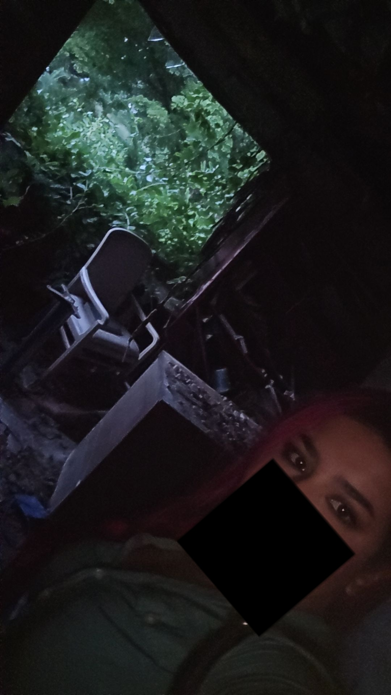
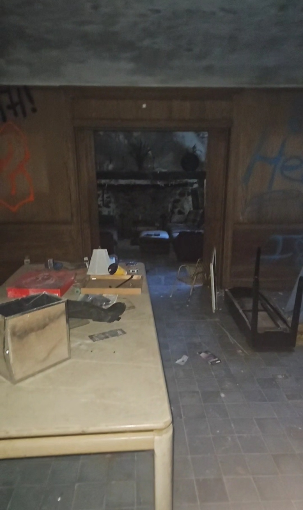
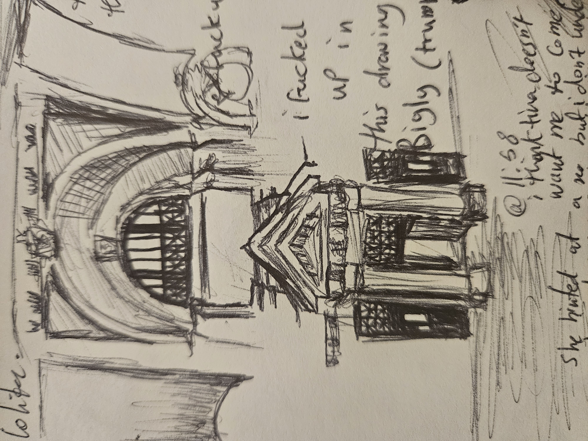
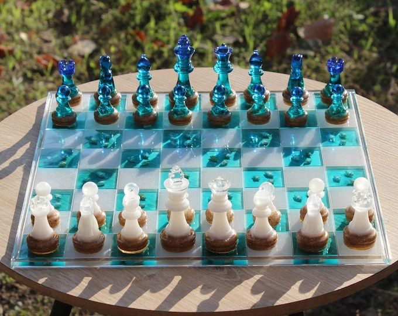
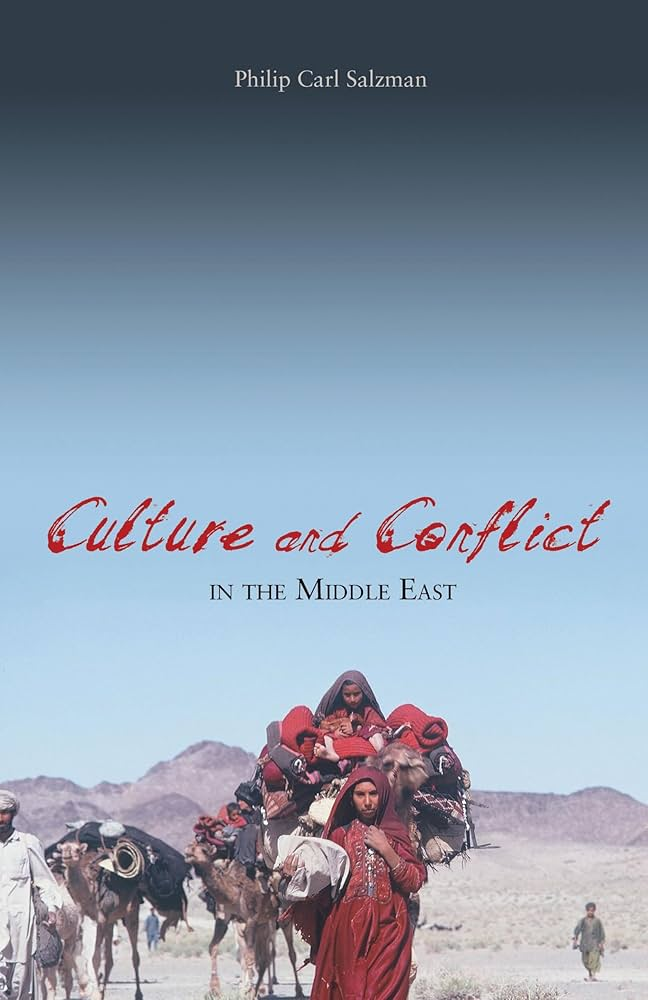

My Hobbies
Going to See Abandoned Places
 
This picture is of me in an abandoned house, one of my favorite recent adventures!!, made sure to pick a picture you can see my colored hair in lol.
Also an example journal entry I had. There are others ones that I wanted to share but they have some personal quotes around them :(
Exploring abandoned places is a unique and sometimes dangerous hobby, often involving encounters with squatters—people who live in these areas and defend them—or scalpers, who enter these places to steal items or plumbing. Despite the risks, this hobby can evoke a deep sense of nostalgia and emotion, witnessing the beauty or intrigue of something left behind for years, sometimes even decades.
While there are those who break into these buildings or steal from them, I take pride in respecting the places I explore. I leave everything as it is, and my visits are solely to draw or waterpaint in my journey journal the fascinating things I find inside and take pictures, honoring the location, its history, and the people connected to it. Interestingly, there's an "abandoned" spot right on campus—the fifth floor of 707 Commonwealth Ave.
Painting

I've always loved drawing, especially when I was younger, but my journey into painting was more of a push than a natural progression. In school, we were required to use acrylics as part of the curriculum, and though I initially resisted, I soon found a certain appeal in their versatility. Acrylics dry quickly, which matched my impatient nature, and I could experiment with layering and bold colors.
For a long time, I thought, "Why would I ever switch to oil painting? It's expensive, takes forever to dry, and I’m far too impatient for that." But as my skills and understanding of the craft grew, so did my curiosity. Eventually, I made the switch to oil painting, and while it did challenge my patience, I discovered the rich textures and deep, vibrant hues that only oils can provide. It was a rewarding shift, allowing me to explore new techniques and creative possibilities that have since become a core part of my artistic expression.
Chess

I worked hard on my chess skills this summer and managed to improve my score by 400 points! However, I eventually hit a "wall" and became so frustrated that I swore to god I wouldn’t play for the rest of the year. Hitting that wall was tough—I even cried for hours because it felt like all my efforts weren’t paying off.
This chess set in the picture isn’t mine, but it's my dream set.
Reading

Though I have an extremely hard time reading and paying attention, I read everything from behavioral economics to Soviet history. I'm currently reading this book while I still have some free time. It's about how Middle Easterners deal with conflict, focusing specifically on the tribal systems in Arabia and their role in wars. As an Arab from a very tribal part of Saudi Arabia, I find it fascinating to discover facts and perspectives that I've never considered before.